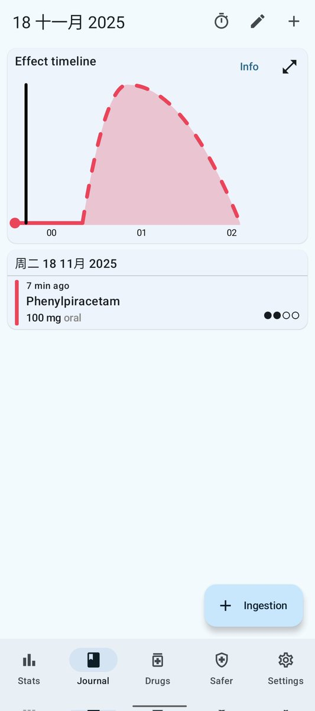

時璃風医詩🍥🌈
@hagishigure
@BaiChuan202505 控制變量，下次添加膽鹼，下下次添加肌酸，下下下次添加膽鹼和肌酸。這樣你就知道如何獲得最好的效果了。

不善言辞
@BaiChuan202505
苯基吡拉西坦
空腹100mg，游戏体验
主观感受，鼠标控制精度，反应速度，场景意识明显提升，全程无分心，无操作失误，游戏沉浸感强，情绪稳定，无心率加快，无焦虑，整体感觉非常干净温和
三小时药效快速消退，ADHD症状加重，注意力难以维持、分心，边打游戏边刷手机，手眼协调下降，出现找不到鼠标现象 https://t.co/9dETYas4wN